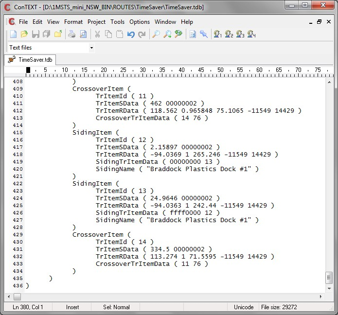

The first version of this procedure used "Speedposts". However, their unpredictability in areas other than isolated diamond crossings can make placing them problematic (they can sometimes not jump across 2 tracks or, more frequently jump across more than two tracks). (If you want to read the older tutorial, click here.)
It's probably better to use the deer hazard as at least you can be sure of its placement. You will need to use two deer hazards for each proposed node. Here's a non-noded diamond crossing as seen in AE>.
Start by backing up your route.
In Route Editor, start by placing a deer hazard on each track close to where the two tracks cross. Make sure the hazards are placed on separate tracks - we can move them later. This will create two Hazzard elements and link each TrVectorNode to the deer hazard by a TrItemRef element. Make a note of the World tile co-ordinates.
Save changes and quit Route Editor.
Using your favourite unicode-aware editor (ConTEXT is used in these screenshots), open the two track database files, route.tdb and route.tit and search for "Hazzard" (sic); they are generally the last two items in the file, but the RE will sometimes drop one of them into an empty spot further up the file; in the example shown, we can see that they are separated by a couple of other Items; here we have the .TDB file (the .TIT file will be identical but you must make identical changes to each file):
We're going to make a few changes to both nodes in both files.
- Change HazzardItem to CrossoverItem : in two places in the two files;
- Change the "6" in the TrItemSData to a "2". If this is not done the signals will not be enabled by the dispatcher;
- Delete the complete line containing TrItemPData - in two places in the two files;
- Add a new line CrossoverTrItemData ( tritemid trackshape ): in two places in the two files; the first parameter of the CrossoverTrItemData element is the TrItemId of the other pair of the crossing. The second parameter is a track shape. Choose the number of a crossing track and it will use the ClearanceDist defined for that track shape in the global tsection.dat file. Suggestions include
- 75: this is the default A1tXover2_5d.s with a clearance distance of 50m; or
- 76: this is the default A1tXover5d.s with a clearance distance of 25m.
Save your changes.
Now let's have a look at this diamond crossing in Activity Editor. Crossing nodes are visible, protecting this diamond.
The nodes are close to, but not exactly on the crossing. No matter, the crossing will still be protected. You can adjust the position of the nodes by altering the first parameter of the TrItemSData element, eg TrItemSData ( 339.645 00000002 ), where 339.645 is the distance in meters from the start of the trackvector. This number could be changed for both entries so the two nodes are on top of each other and then appear as one. I adjust the value by 5 or so metres (in both .tit and .tdb files)and simply reload the route in AE after each change to see how I'm going. Shown below, I've moved the east-west node, then the north-south node.
Finally, you should have both the .tdb and .tit files looking something like this:


Ok, now let's open Route Editor. As you open it, you may see an error message like this:

If you do, simply answer "yes" and continue. The Hazzard entries will be deleted in the World files. This will make changes irreversible. Immediately save and quit Route Editor, then re-start (RE likes to arc up if you don't folow this simple step and you may lose your route). Answer "No" if you may want to convert the crossing node back to a Hazzard for deletion with Route Editor.
Now restart Route Editor, place your signals, save and quit Route Editor.